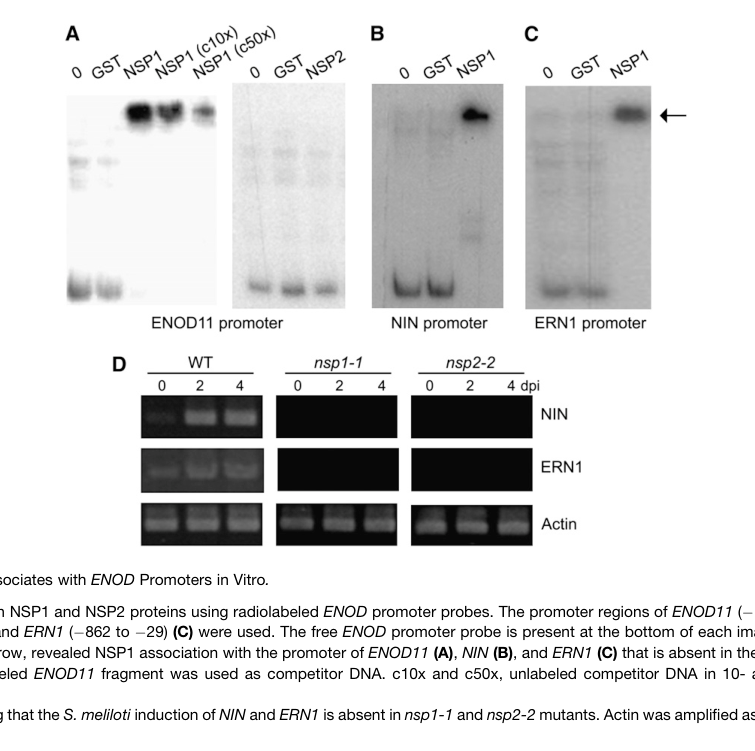

NSP1 (NODULATION SIGNALING PATHWAY 1, Q4VYC8) is a plant-specific GRAS-family transcriptional regulator from the model legume Medicago truncatula and a CORE component of the rhizobial Nod factor (NF) signaling pathway. NSP1 acts in the nucleus downstream of NF perception, nuclear calcium spiking and the calcium/calmodulin-dependent protein kinase CCaMK/DMI3, as part of the transcriptional response module that activates early nodulation (symbiotic) gene expression. NSP1 is a classical DNA-binding transcription factor: in vitro EMSA shows that NSP1 (but not its partner NSP2) directly binds promoter fragments of the early symbiotic marker ENOD11, and random binding-site selection defined an AATTT consensus cis-element (a Nodulation Responsive Element, NRE) recognised by NSP1. NSP1 and NSP2 form a heterocomplex that associates with the promoters of NF-responsive genes (ENOD11, ERN1, NIN); loss-of-function nsp1 mutants abolish or strongly impair NF-induced transcription of these genes and lose the ability to form nitrogen- fixing root nodules (the nsp1-1 and nsp1-2 alleles delete the C-terminal GRAS domain and cause loss of nodulation). NSP1 therefore couples NF-triggered signaling to the developmental program of nodule organogenesis and rhizobial infection. Beyond nodulation, NSP1 has a conserved second role as a transcriptional regulator of strigolactone (SL) biosynthesis in roots: nsp1 mutants do not produce SLs and show strongly reduced expression of the beta-carotene isomerase gene DWARF27 (D27); SL output links NSP1 to broader rhizosphere signaling, including with arbuscular mycorrhizal fungi. The protein is built around the canonical GRAS architecture (LRI, VHIID, LRII, PFYRE and SAW subdomains) and is expressed mainly in roots and nodules, consistent with its symbiotic role.
| GO Term | Evidence | Action | Reason |
|---|---|---|---|
|
GO:0009877
nodulation
|
IEA
GO_REF:0000043 |
ACCEPT |
Summary: SPKW (GO_REF:0000043) annotation derived from the UniProt keyword "Nodulation"; snapshot-only, removed in the current GOA release. NSP1 is a GRAS-family transcription factor that is essential for rhizobial Nod-factor-induced gene expression and for the formation of nitrogen-fixing root nodules - "nodulation" is its genuine, central biological process, not an over-annotation.
Reason: GOA's removal of this annotation was NOT justified - this is collateral damage from the blanket retirement of the keyword2GO pipeline. Unlike most SPKW keywords (which map to over-broad or peripheral terms), the "Nodulation" keyword here names the gene's defining function: NSP1 acts downstream of Nod factor perception, calcium spiking and CCaMK/DMI3 in the core transcriptional module that activates early nodulation genes (ENOD11, ERN1, NIN), and nsp1 loss-of-function mutants lose nodulation entirely (the nsp1-1 and nsp1-2 alleles that delete the GRAS domain cause loss of nodulation, per UniProt). GO:0009877 "nodulation" is defined as "The formation of nitrogen-fixing root nodules on plant roots" and is the correct, appropriately specific process term. Critically, the current (2026) GOA release retains NO nodulation or symbiosis-process term for NSP1 (only a generic "response to symbiotic fungus" ARBA term and "regulation of DNA-templated transcription"), so removing this annotation strips the gene of any representation of its central role. The annotation should be re-added as a CORE process. (This is the RHT1/DELLA-analogous legitimate case where a SwissProt keyword captures the real biology.)
Supporting Evidence:
file:MEDTR/NSP1/NSP1-deep-research-falcon.md
NSP1 acts **downstream of Nod factor perception, calcium spiking, and CCaMK/DMI3** as part of the core transcriptional response that activates early nodulation genes
file:MEDTR/NSP1/NSP1-deep-research-falcon.md
supporting NSP1 as essential for NF-induced transcriptional reprogramming required for nodulation
file:MEDTR/NSP1/NSP1-deep-research-falcon.md
Loss-of-function nsp backgrounds abolish or strongly impair NF-induced transcriptional responses (e.g., ENOD11, ERN1, NIN induction)
|
|
GO:0005634
nucleus
|
IEA
GO_REF:0000044 |
ACCEPT |
Summary: IEA annotation from the UniProt subcellular-location vocabulary mapping. NSP1 is a nuclear GRAS-family transcriptional regulator - nuclear localization is consistent with its DNA- binding, promoter-association function.
Reason: Correct and consistent with the UniProt subcellular location (Nucleus) and with NSP1's characterized role as a nuclear transcription factor that homo-/hetero-oligomerises and associates with the promoters of NF-responsive genes. NSP1 is described as a nuclear transcriptional regulator, and GRAS-family transcription factors function in the nucleus. The IBA annotation in UniProt also assigns "nucleus" (GO:0005634), corroborating this term.
Supporting Evidence:
file:MEDTR/NSP1/NSP1-deep-research-falcon.md
NSP1 is characterized as a nuclear transcriptional regulator
file:MEDTR/NSP1/NSP1-deep-research-falcon.md
NSP1 is a plant-specific **GRAS** transcriptional regulator that functions in the **nucleus**
|
|
GO:0009610
response to symbiotic fungus
|
IEA
GO_REF:0000117 |
KEEP AS NON CORE |
Summary: IEA annotation created by an ARBA machine-learning model. NSP1's experimentally established role is in rhizobial (bacterial) Nod-factor signaling and nodulation; its connection to fungal symbiosis is indirect (via strigolactone biosynthesis, which influences arbuscular mycorrhizal fungi) and is treated in the literature as broader pathway context rather than a directly demonstrated NSP1 function.
Reason: The term is not wrong but does not capture NSP1's core function. The well-supported, gene-specific biology of M. truncatula NSP1 concerns the rhizobial Nod-factor pathway and nodule formation (a bacterial, not fungal, symbiosis). NSP1 contributes to fungal symbiosis only indirectly: it is required for strigolactone biosynthesis, and strigolactones are signals that affect arbuscular mycorrhizal fungi; the deep-research synthesis explicitly flags NSP1's mycorrhizal/LCO role as "less direct than for nodulation" and "broader pathway context rather than definitive Medicago NSP1-only mechanistic proof." The annotation is a reasonable computational generalization (NSP-family GRAS regulators do participate in mycorrhizal-responsive programs), so it is retained, but classified as non-core; the core symbiotic process for NSP1 is nodulation (GO:0009877) and the upstream regulation of strigolactone biosynthesis.
Supporting Evidence:
file:MEDTR/NSP1/NSP1-deep-research-falcon.md
for NSP1 these points are less direct than for nodulation and should be treated as broader pathway context rather than definitive Medicago NSP1-only mechanistic proof.
file:MEDTR/NSP1/NSP1-deep-research-falcon.md
These findings support NSP1 as a transcriptional regulator linking symbiosis signaling modules to carotenoid/SL pathway output, which is relevant to broader rhizosphere signaling and potentially to mycorrhizal interactions
|
|
GO:0001228
DNA-binding transcription activator activity, RNA polymerase II-specific
|
IDA
file:MEDTR/NSP1/NSP1-deep-research-falcon.md |
NEW |
Summary: NSP1 is a sequence-specific DNA-binding transcription factor that directly binds the ENOD11 promoter in vitro and is required for NF-induced activation of early symbiotic genes, acting as a transcriptional activator.
Reason: Current GOA lacks an MF term describing NSP1's activating transcription-factor activity. NSP1 directly binds promoter DNA (EMSA on the ENOD11 promoter; the AATTT Nodulation Responsive Element is the recognised cis-element) and is genetically required for the Nod-factor-elicited induction of ENOD11, ERN1 and NIN; loss of NSP1 abolishes this transcriptional activation. This positive, sequence-specific transcriptional-activation role is precisely captured by GO:0001228. IDA is justified by the in vitro DNA-binding assays combined with the in vivo induction data.
Supporting Evidence:
file:MEDTR/NSP1/NSP1-deep-research-falcon.md
In vitro EMSA experiments show **NSP1 (but not NSP2) directly binds** fragments of the **ENOD11** promoter.
file:MEDTR/NSP1/NSP1-deep-research-falcon.md
supporting NSP1 as essential for NF-induced transcriptional reprogramming required for nodulation
|
|
GO:0043565
sequence-specific DNA binding
|
IDA
file:MEDTR/NSP1/NSP1-deep-research-falcon.md |
NEW |
Summary: NSP1 binds a specific DNA cis-element (the AATTT Nodulation Responsive Element) in the promoters of NF-responsive genes; mutation of the motif abolishes binding.
Reason: Random binding-site selection plus EMSA defined an NSP1-recognised cis-element with consensus AATTT (Nodulation Responsive Element), and AATTT->CCCCC mutation strongly reduces binding - the hallmark of sequence-specific DNA binding (GO:0043565). This MF underlies the transcription-activator activity above and is supported by the same Hirsch et al. EMSA data summarised in the deep-research report. UniProt carries the corresponding IBA term (GO:0043565), and the gene-specific Medicago data provide direct (IDA) support.
Supporting Evidence:
file:MEDTR/NSP1/NSP1-deep-research-falcon.md
Random binding-site selection and EMSA define an NSP1-recognized cis-element with consensus **AATTT**, described as a Nodulation Responsive Element
file:MEDTR/NSP1/NSP1-deep-research-falcon.md
Mutation of this motif (AATTT→CCCCC) strongly reduces binding.
|
|
GO:0006355
regulation of DNA-templated transcription
|
IDA
file:MEDTR/NSP1/NSP1-deep-research-falcon.md |
NEW |
Summary: NSP1 regulates transcription of early symbiotic genes: it directly binds the ENOD11 promoter and is required for NF-induced induction of ENOD11, ERN1 and NIN. UniProt carries the corresponding IBA annotation to this term.
Reason: NSP1 is a transcriptional regulator that modulates DNA-templated transcription of NF-responsive genes; loss of NSP1 abolishes their induction. GO:0006355 is the general process term for transcription regulation and corresponds to the IBA annotation in UniProt (DR GO:0006355 ... IBA:GO_Central). It is the parent process under which the more specific activator MF (GO:0001228) operates. IDA is justified by the combination of in vitro promoter binding and in vivo induction-dependence data summarised in the deep-research report.
Supporting Evidence:
file:MEDTR/NSP1/NSP1-deep-research-falcon.md
NSP1 functions as a **DNA-binding transcription factor/regulator**; unlike NSP2, NSP1 directly binds promoter DNA in vitro and associates with symbiosis gene promoters in vivo.
file:MEDTR/NSP1/NSP1-deep-research-falcon.md
Loss-of-function nsp backgrounds abolish or strongly impair NF-induced transcriptional responses (e.g., ENOD11, ERN1, NIN induction)
|
|
GO:1901601
strigolactone biosynthetic process
|
IMP
file:MEDTR/NSP1/NSP1-deep-research-falcon.md |
NEW |
Summary: NSP1 is required for strigolactone biosynthesis in M. truncatula roots: nsp1 mutants do not produce strigolactones and show strongly reduced expression of the SL-biosynthetic gene DWARF27 (D27).
Reason: A conserved, experimentally demonstrated NSP1 function outside nodulation is the regulation of strigolactone biosynthesis. nsp1 mutants fail to produce strigolactones and the DWARF27 (beta-carotene isomerase D27) homolog is ~90% reduced in nsp mutant backgrounds, showing that NSP1 transcriptionally drives the SL pathway. GO:1901601 "strigolactone biosynthetic process" (a sesquiterpenoid/lactone biosynthetic process) captures the pathway NSP1 is required for; this is consistent with the UniProt FUNCTION statement that NSP1 is a "Transcription factor involved in the control of strigolactone biosynthesis." IMP is justified by the nsp1 loss-of-function metabolite/expression phenotype. (NSP1 acts as the upstream transcriptional regulator rather than as an SL-biosynthetic enzyme itself.)
Supporting Evidence:
file:MEDTR/NSP1/NSP1-deep-research-falcon.md
**nsp1 mutants do not produce SLs**
file:MEDTR/NSP1/NSP1-deep-research-falcon.md
nsp mutants show markedly reduced expression of **DWARF27**, a key SL-biosynthetic gene
|
Q: What is the complete genome-wide set of direct NSP1 DNA-binding targets in M. truncatula roots and nodules, and which require co-binding of NSP2 versus NSP1 alone?
Suggested experts: Giles Oldroyd, Rene Geurts
Q: How is NSP1 transcriptional activity at the ENOD11/ERN1/NIN promoters gated by DELLA/gibberellin signaling and by repressive GRAS proteins such as Lateral suppressor?
Suggested experts: Florian Frugier
Q: To what extent is NSP1's contribution to arbuscular-mycorrhizal symbiosis mediated solely through strigolactone biosynthesis versus direct transcriptional inputs into the mycorrhizal program?
Suggested experts: Rene Geurts
Experiment: Genome-wide DAP-seq or ChIP-seq of NSP1 (with and without NSP2) in M. truncatula roots, with and without Nod factor treatment, to map direct targets and the in vivo AATTT NRE binding landscape.
Hypothesis: NSP1 directly binds AATTT-containing cis-elements in the promoters of early nodulation genes genome-wide, and NSP2 co-binding extends or stabilises the bound target set upon Nod factor signaling.
Type: genome-wide TF binding assay (DAP-seq/ChIP-seq)
Experiment: Quantitative transactivation assays in M. truncatula roots using NSP1 with native versus AATTT->CCCCC-mutated ENOD11/ERN1/NIN promoter reporters, in wild-type and nsp2 mutant backgrounds.
Hypothesis: NSP1 activates these promoters in an AATTT-NRE-dependent manner, and full activation additionally requires NSP2.
Type: promoter-reporter transactivation assay
Experiment: Cross-rescue test of an nsp1 mutant with NSP1 transgenes carrying targeted mutations in the VHIID/SAW GRAS subdomains, scoring both nodulation (nodule number, acetylene-reduction nitrogen fixation) and root strigolactone levels / DWARF27 expression.
Hypothesis: Distinct GRAS subdomain residues are separable requirements for NSP1's nodulation function versus its strigolactone-biosynthesis-regulation function.
Type: structure-function complementation analysis
The research report should be a detailed narrative explaining the function, biological processes, and localization of the gene product. Citations should be given for all claims.
You should prioritize authoritative reviews and primary scientific literature when conducting research. You can supplement
this with annotations you find in gene/protein databases, but these can be outdated or inaccurate.
We are specifically interested in the primary function of the gene - for enzymes, what reaction is catalyzed, and what is the substrate specificity? For transporters, what is the substrate? For structural proteins or adapters, what is the broader structural role? For signaling molecules, what is the role in the pathway.
We are interested in where in or outside the cell the gene product carries out its function.
We are also interested in the signaling or biochemical pathways in which the gene functions. We are less interested in broad pleiotropic effects, except where these elucidate the precise role.
Include evidence where possible. We are interested in both experimental evidence as well as inference from structure, evolution, or bioinformatic analysis. Precise studies should be prioritized over high-throughput, where available.
The NSP1 discussed here is NODULATION SIGNALING PATHWAY 1, a GRAS-family transcriptional regulator from the model legume Medicago truncatula, experimentally characterized as a core component of rhizobial Nod factor (NF) signaling and early symbiotic gene expression. This identity matches the UniProt description for Q4VYC8 (NSP1; GRAS/TF_GRAS domain) and is consistent with primary mechanistic studies in M. truncatula that explicitly study “NSP1” in nodulation signaling. (hirsch2009grasproteinsform pages 1-2, liu2011strigolactonebiosynthesisin pages 1-2)
NSP1 is a plant-specific GRAS transcriptional regulator that functions in the nucleus as part of a transcriptional module activated downstream of the common symbiosis signaling pathway (CSSP). In the NF signaling cascade, nuclear calcium oscillations are perceived by CCaMK (also referred to as DMI3 in Medicago genetic nomenclature), which activates symbiosis transcriptional programs requiring NSP1/NSP2. (hirsch2009grasproteinsform pages 1-2, liu2011strigolactonebiosynthesisin pages 2-3)
A central mechanistic concept is that NSP1 and NSP2 form a complex that associates with promoters of NF-responsive genes. NSP1 has direct DNA-binding activity, while NSP2 is required for full promoter association and transcriptional output in vivo in key contexts. (hirsch2009grasproteinsform pages 6-9, hirsch2009grasproteinsform pages 5-6)
NSP1 behaves as a “classical” transcriptional regulator with direct promoter binding. In vitro EMSA experiments show NSP1 (but not NSP2) directly binds fragments of the ENOD11 promoter. (hirsch2009grasproteinsform pages 5-6, hirsch2009grasproteinsform media 4a719841)
Random binding-site selection and EMSA define an NSP1-recognized cis-element with consensus AATTT, described as a Nodulation Responsive Element (NRE; NRE1/NRE2 in ENOD11 promoter mapping). Mutation of this motif (AATTT→CCCCC) strongly reduces binding. (hirsch2009grasproteinsform pages 6-9, hirsch2009grasproteinsform media 4a719841)
Mechanistic evidence links NSP1 promoter binding/association to multiple early symbiotic regulators/markers:
- ENOD11: NSP1 binds promoter fragments in vitro; ChIP supports in vivo association with promoter regions, enhanced after NF treatment. (hirsch2009grasproteinsform pages 6-9, hirsch2009grasproteinsform media b1d1c4af)
- ERN1: NSP1 associates with defined promoter regions and is required for rhizobial induction of ERN1 in mutant backgrounds. (hirsch2009grasproteinsform pages 9-10, hirsch2009grasproteinsform pages 6-9)
- NIN: NSP1 binds/associates with promoter regions and is required for rhizobial induction of NIN in nsp mutants. (hirsch2009grasproteinsform pages 9-10, hirsch2009grasproteinsform pages 6-9)
Collectively, these data support NSP1 as a direct transcriptional regulator coupling NF-triggered signaling to early nodulation gene expression programs. (hirsch2009grasproteinsform pages 9-10, hirsch2009grasproteinsform pages 6-9)
NSP1 functions downstream of nuclear signaling and is required for CCaMK-driven symbiotic gene activation: autoactivated CCaMK can induce ENOD11 expression, but this induction requires NSP1/NSP2/ERN1, placing NSP1 in the core transcriptional response module of NF signaling. (hirsch2009grasproteinsform pages 1-2)
NSP2 is the best-supported direct partner:
- NSP1 and NSP2 form homo- and hetero-oligomeric assemblies; NSP2 is required for robust in vivo association of NSP1 with ENOD11 promoter under NF conditions, and disruption of NSP1–NSP2 interaction compromises nodulation outputs. (hirsch2009grasproteinsform pages 6-9, hirsch2009grasproteinsform pages 5-6)
DELLA-mediated hormonal crosstalk (gibberellin signaling) provides an additional regulatory layer. A primary mechanistic study reports DELLA proteins interact with NSP2 and proposes DELLA action may regulate NSP1/NSP2- and NF-YA1-dependent activation of ERN1 transcription (note: this is evidence for pathway-level integration; direct NSP1–DELLA binding is not established in the provided excerpt). (fonounifarde2016dellamediatedgibberellinsignalling pages 1-2)
A recent evolutionary/regulatory model (2024) places NSP2/NSP1 alongside CCaMK/CYCLOPS as positive inputs promoting NIN transcription and indicates that a GRAS protein (Lateral suppressor) can physically interact with NSP2 and CYCLOPS to repress these inputs on NIN. This supports the view that NSP1 participates in a multi-protein transcriptional control architecture converging on NIN, though the 2024 evidence emphasizes NSP2 and CYCLOPS interactions rather than NSP1 biochemistry per se. (liu2024lossoflateral pages 11-13)
NSP1 is characterized as a nuclear transcriptional regulator; NSP1 homopolymerization and promoter association are consistent with nuclear localization expected for GRAS transcription factors. (hirsch2009grasproteinsform pages 1-2, hirsch2009grasproteinsform pages 5-6)
Loss-of-function nsp backgrounds abolish or strongly impair NF-induced transcriptional responses (e.g., ENOD11, ERN1, NIN induction), supporting NSP1 as essential for NF-induced transcriptional reprogramming required for nodulation. (hirsch2009grasproteinsform pages 6-9)
A quantitative complementation example demonstrates functional dependence on NSP1–NSP2 interaction: an NSP2 point mutation (A168V) that reduces NSP2–NSP1 interaction by ~3-fold results in ~3-fold fewer nodules and reduced acetylene-reduction activity, indicating that NSP1-containing complexes are required for efficient nodule formation and nitrogen fixation-associated function. (hirsch2009grasproteinsform pages 5-6)
A major expansion of NSP1 functional scope is its role in strigolactone (SL) biosynthesis:
- In M. truncatula, nsp1 mutants do not produce SLs, and nsp mutants show markedly reduced expression of DWARF27, a key SL-biosynthetic gene; one report quantifies the DWARF27 homolog as ~90% reduced in nsp mutant backgrounds. (liu2011strigolactonebiosynthesisin pages 1-2, liu2011strigolactonebiosynthesisin pages 2-3)
These findings support NSP1 as a transcriptional regulator linking symbiosis signaling modules to carotenoid/SL pathway output, which is relevant to broader rhizosphere signaling and potentially to mycorrhizal interactions (because SLs are well-known signals affecting arbuscular mycorrhizal fungi). (liu2011strigolactonebiosynthesisin pages 1-2)
A 2024 Genome Biology study identifies an evolutionarily relevant GRAS protein (Lateral suppressor) whose presence suppresses nodulation in legumes when expressed, and proposes a model where it represses the transcriptional activity of both NSP2/NSP1 and CCaMK/CYCLOPS modules on NIN. This provides a contemporary, systems-level view of how NSP1-associated modules may be gated by additional GRAS regulators and highlights an engineering-relevant “switch” that can abolish nodulation when manipulated. (liu2024lossoflateral pages 11-13)
A 2024 GRAS TF review reiterates the consensus that NSP1/NSP2 complex formation and promoter association are central to NF-induced gene expression and that mapping interaction partners and DNA-binding sites remains important for translational manipulation (e.g., via protein–protein interaction mapping and regulatory element discovery). (mishra2024roleofgras pages 3-5)
A 2024 in-silico co-expression/interaction mapping effort links NSP1 to cytokinin-related nodulation phenomena (e.g., cytokinin-induced primordia dependence on NSP1) and proposes transporter candidates that might connect NSP1-dependent transcriptional states to cytokinin distribution. These results are best interpreted as hypothesis-generating rather than definitive functional proof for NSP1 mechanisms. (azarakhsh2024identificationofnew pages 4-6)
Although focused on NSP2, a 2024 study in Parasponia frames NSP-family GRAS regulators as engineering-relevant hubs whose expression tuning can change symbiotic permissiveness and architecture, while also introducing trade-offs (e.g., altered nodulation organogenesis when overexpressed). This supports the practical relevance of manipulating NSP-family regulatory nodes, even if NSP1 itself was not the direct transgene target in that work. (alhusayni2024ectopicexpressionof pages 1-2, alhusayni2024ectopicexpressionof pages 9-11)
Recent work indicates that GRAS regulators and their partners can serve as leverage points to modulate symbiosis traits:
- Transgenic expression of a “non-symbiotic” GRAS regulator (Lateral suppressor) can abolish nodulation in legumes, implying that manipulating GRAS–GRAS and GRAS–CYCLOPS regulatory interactions can robustly tune nodulation capacity. (liu2024lossoflateral pages 11-13)
- Reviews emphasize that identifying NSP1/NSP2 partners and promoter-binding logic is a prerequisite for rationally engineering nodulation efficiency and balancing trade-offs with other symbioses and development. (mishra2024roleofgras pages 3-5)
Because NSP1 is required for SL biosynthesis in M. truncatula, NSP1-regulated transcription is potentially relevant for strategies aiming to adjust SL-mediated rhizosphere signaling and symbiosis readiness (including interactions with arbuscular mycorrhizal fungi), though the direct agronomic implementation would require careful balancing due to pleiotropy of SLs. (liu2011strigolactonebiosynthesisin pages 1-2)
Key figure panels from Hirsch et al. (2009) provide direct, visual support for NSP1’s molecular function:
- EMSA showing NSP1 binds ENOD11 promoter DNA and motif mutation disrupts binding (hirsch2009grasproteinsform media 4a719841)
- Identification/mapping of AATTT NRE motifs and loss of binding upon motif mutation (hirsch2009grasproteinsform media 4a719841)
- ChIP evidence for in vivo association of NSP1/NSP2 with ENOD11 promoter enhanced by Nod factor (hirsch2009grasproteinsform media b1d1c4af)
The following table consolidates the strongest, directly supported functional-annotation statements for M. truncatula NSP1 and clearly distinguishes primary evidence from review/in-silico inference.
| Functional aspect | Key findings | Evidence type | Representative source with year and URL |
|---|---|---|---|
| Target identity / disambiguation | NSP1 here refers specifically to Medicago truncatula NODULATION SIGNALING PATHWAY 1, a GRAS-family transcriptional regulator acting in symbiosis; literature used aligns with the Medicago nodulation factor signaling protein rather than unrelated NSP1 symbols in other organisms. (hirsch2009grasproteinsform pages 1-2, liu2011strigolactonebiosynthesisin pages 1-2) | Primary functional studies; family assignment | Hirsch et al., 2009 (primary), The Plant Cell — https://doi.org/10.1105/tpc.108.064501 ; Liu et al., 2011 (primary), The Plant Cell — https://doi.org/10.1105/tpc.111.089771 |
| Molecular function | NSP1 functions as a DNA-binding transcription factor/regulator; unlike NSP2, NSP1 directly binds promoter DNA in vitro and associates with symbiosis gene promoters in vivo. (hirsch2009grasproteinsform pages 6-9, hirsch2009grasproteinsform pages 5-6) | EMSA; ChIP; transcriptional activation assays | Hirsch et al., 2009 (primary) — https://doi.org/10.1105/tpc.108.064501 |
| DNA motif / cis-element specificity | Random binding-site selection and EMSA identified an AATTT motif (NRE/Nodulation Responsive Element) as the NSP1-recognized cis-element; mutation of AATTT to CCCCC strongly reduces binding. (hirsch2009grasproteinsform pages 6-9, hirsch2009grasproteinsform media 4a719841) | Random binding-site selection; EMSA; figure-supported evidence | Hirsch et al., 2009 (primary) — https://doi.org/10.1105/tpc.108.064501 |
| Direct target genes | Direct or promoter-associated NSP1 targets include ENOD11, ERN1, and NIN; induction of NIN and ERN1 by Sinorhizobium meliloti is absent in nsp1/nsp2 mutants. (hirsch2009grasproteinsform pages 9-10, hirsch2009grasproteinsform pages 6-9) | EMSA; ChIP; mutant expression analysis | Hirsch et al., 2009 (primary) — https://doi.org/10.1105/tpc.108.064501 |
| Position in nodulation pathway | NSP1 acts downstream of Nod factor perception, calcium spiking, and CCaMK/DMI3 as part of the core transcriptional response that activates early nodulation genes. CCaMK-induced ENOD11 expression requires NSP1/NSP2/ERN1. (hirsch2009grasproteinsform pages 1-2, liu2011strigolactonebiosynthesisin pages 2-3) | Genetic pathway analysis; induced-expression assays; review/model support | Hirsch et al., 2009 (primary) — https://doi.org/10.1105/tpc.108.064501 ; Liu et al., 2011 (primary) — https://doi.org/10.1105/tpc.111.089771 |
| Interaction partners: NSP2 | NSP1 forms homopolymers and a functionally critical NSP1–NSP2 heteropolymer. NSP2 does not bind ENOD11 DNA directly in vitro but is recruited in vivo in an NSP1-dependent manner; Nod factor enhances promoter association of the complex. (hirsch2009grasproteinsform pages 9-10, hirsch2009grasproteinsform pages 6-9, hirsch2009grasproteinsform pages 5-6) | Co-IP; BiFC/nuclear fluorescence; EMSA; ChIP | Hirsch et al., 2009 (primary) — https://doi.org/10.1105/tpc.108.064501 |
| Interaction partners: DELLA / NF-YA1 context | In GA-regulated nodulation signaling, DELLA proteins interact with NSP2 and NF-YA1, and authors propose DELLA may regulate NSP1/NSP2- and NF-YA1-mediated activation of ERN1; this supports NSP1 participation in a broader nuclear co-regulatory complex, though direct NSP1–DELLA binding was not shown in the cited excerpt. (fonounifarde2016dellamediatedgibberellinsignalling pages 1-2) | Primary mechanistic study; interaction/model inference | Fonouni-Farde et al., 2016 (primary), Nature Communications — https://doi.org/10.1038/ncomms12636 |
| Interaction partners: CYCLOPS/IPD3 module context | A recent evolutionary/regulatory model places NSP2/NSP1 and CCaMK/CYCLOPS as parallel positive inputs to NIN transcription; Lateral suppressor can interact with NSP2 and CYCLOPS and repress both modules on NIN. Evidence here is strong for pathway context but indirect for NSP1 physical contacts. (liu2024lossoflateral pages 11-13) | Primary 2024 regulatory/evolutionary study; model/mechanistic genetics | Liu et al., 2024 (primary), Genome Biology — https://doi.org/10.1186/s13059-024-03393-6 |
| Cellular localization | NSP1 is nuclear, consistent with GRAS-family transcriptional regulator function and observed nuclear complex formation/promoter association. (hirsch2009grasproteinsform pages 1-2, hirsch2009grasproteinsform pages 5-6) | Nuclear fluorescence/localization; promoter association | Hirsch et al., 2009 (primary) — https://doi.org/10.1105/tpc.108.064501 |
| Quantitative symbiotic phenotype | Disrupting the NSP1–NSP2 interaction impairs nodulation: an NSP2 A168V substitution that reduces NSP2–NSP1 interaction by about threefold causes about threefold fewer nodules and reduced acetylene-reduction activity in complementation assays, demonstrating the functional importance of the NSP1-containing complex. (hirsch2009grasproteinsform pages 5-6) | Quantitative mutant/complementation phenotype; acetylene reduction assay | Hirsch et al., 2009 (primary) — https://doi.org/10.1105/tpc.108.064501 |
| Expression pattern | NSP1 is reported to be expressed mainly in roots and nodules, matching its role in symbiotic signaling and nodulation-associated transcriptional programs. (liu2011strigolactonebiosynthesisin pages 1-2, liu2011strigolactonebiosynthesisin pages 2-3) | Expression profiling; microarray/qRT-PCR context | Liu et al., 2011 (primary) — https://doi.org/10.1105/tpc.111.089771 |
| Roles outside nodulation: strigolactone biosynthesis | NSP1 has an additional conserved role outside nodulation in strigolactone (SL) biosynthesis. In M. truncatula, nsp1 mutants do not produce SLs, and nsp1/nsp2 defects correlate with strong reduction of DWARF27 expression (~90% decrease reported for the DWARF27 homolog). (liu2011strigolactonebiosynthesisin pages 1-2, liu2011strigolactonebiosynthesisin pages 2-3) | Mutant metabolite phenotype; transcriptomics; qRT-PCR | Liu et al., 2011 (primary) — https://doi.org/10.1105/tpc.111.089771 |
| Roles outside nodulation: mycorrhizal / LCO-related signaling | Review and comparative evidence indicate NSP-family GRAS regulators also participate in mycorrhizal/LCO-responsive transcriptional programs and nutrient-responsive symbiosis regulation, but for NSP1 these points are less direct than for nodulation and should be treated as broader pathway context rather than definitive Medicago NSP1-only mechanistic proof. (mishra2024roleofgras pages 3-5, alhusayni2024ectopicexpressionof pages 15-16) | Review/model; comparative symbiosis literature | Mishra et al., 2024 (review) — https://doi.org/10.18805/ijare.a-6145 ; Alhusayni et al., 2024 (primary/comparative, NSP2-focused) — https://doi.org/10.3389/fpls.2024.1468812 |
| Cytokinin-related nodulation context | An in-silico/co-expression 2024 analysis proposed that cytokinin-induced nodule primordium formation depends on NSP1 and suggested NSP1-associated transport candidates such as MtABCG38. This is hypothesis-generating and lower-confidence than direct biochemical/genetic evidence. (azarakhsh2024identificationofnew pages 4-6) | In-silico co-expression/network analysis | Azarakhsh et al., 2024 (in-silico) — URL not available in provided evidence |
| Expert synthesis / current understanding | Authoritative recent synthesis states NSP1/NSP2 are essential GRAS regulators in early symbiotic signaling, with complex formation, promoter binding, and potential engineering value for improving symbiosis-related traits; however, partner mapping and DNA-target catalogs remain incomplete. (mishra2024roleofgras pages 3-5) | Review/expert analysis | Mishra et al., 2024 (review) — https://doi.org/10.18805/ijare.a-6145 |
Table: This table summarizes experimentally supported and recent contextual evidence for the Medicago truncatula NSP1 protein (UniProt Q4VYC8). It distinguishes high-confidence primary findings from review-based or in-silico inferences to support functional annotation.
Despite strong mechanistic understanding of NSP1 as a DNA-binding GRAS regulator in NF signaling, recent (2023–2024) peer-reviewed studies in the retrieved set provide more contextual network and evolutionary insights than new NSP1-specific biochemical mechanism (e.g., most new complex/mechanistic details in 2024 sources emphasize NSP2/CYCLOPS or broader GRAS regulation). Direct, NSP1-specific 2023–2024 datasets such as genome-wide binding maps (ChIP-seq/DAP-seq) or high-resolution structural studies were not present in the accessible evidence here; thus, the most definitive DNA motif/target evidence remains anchored in foundational primary work. (hirsch2009grasproteinsform pages 6-9, liu2024lossoflateral pages 11-13)
References
(hirsch2009grasproteinsform pages 1-2): Sibylle Hirsch, Jiyoung Kim, Alfonso Muñoz, Anne B. Heckmann, J. Allan Downie, and Giles E.D. Oldroyd. Gras proteins form a dna binding complex to induce gene expression during nodulation signaling in medicago truncatula. The Plant Cell, 21(2):545-557, Feb 2009. URL: https://doi.org/10.1105/tpc.108.064501, doi:10.1105/tpc.108.064501. This article has 500 citations.
(liu2011strigolactonebiosynthesisin pages 1-2): Wei Liu, Wouter Kohlen, Alessandra Lillo, Rik Op den Camp, Sergey Ivanov, Marijke Hartog, Erik Limpens, Muhammad Jamil, Cezary Smaczniak, Kerstin Kaufmann, Wei-Cai Yang, Guido J.E.J. Hooiveld, Tatsiana Charnikhova, Harro J. Bouwmeester, Ton Bisseling, and René Geurts. Strigolactone biosynthesis in medicago truncatula and rice requires the symbiotic gras-type transcription factors nsp1 and nsp2. The Plant Cell, 23:3853-3865, Oct 2011. URL: https://doi.org/10.1105/tpc.111.089771, doi:10.1105/tpc.111.089771. This article has 358 citations.
(liu2011strigolactonebiosynthesisin pages 2-3): Wei Liu, Wouter Kohlen, Alessandra Lillo, Rik Op den Camp, Sergey Ivanov, Marijke Hartog, Erik Limpens, Muhammad Jamil, Cezary Smaczniak, Kerstin Kaufmann, Wei-Cai Yang, Guido J.E.J. Hooiveld, Tatsiana Charnikhova, Harro J. Bouwmeester, Ton Bisseling, and René Geurts. Strigolactone biosynthesis in medicago truncatula and rice requires the symbiotic gras-type transcription factors nsp1 and nsp2. The Plant Cell, 23:3853-3865, Oct 2011. URL: https://doi.org/10.1105/tpc.111.089771, doi:10.1105/tpc.111.089771. This article has 358 citations.
(hirsch2009grasproteinsform pages 6-9): Sibylle Hirsch, Jiyoung Kim, Alfonso Muñoz, Anne B. Heckmann, J. Allan Downie, and Giles E.D. Oldroyd. Gras proteins form a dna binding complex to induce gene expression during nodulation signaling in medicago truncatula. The Plant Cell, 21(2):545-557, Feb 2009. URL: https://doi.org/10.1105/tpc.108.064501, doi:10.1105/tpc.108.064501. This article has 500 citations.
(hirsch2009grasproteinsform pages 5-6): Sibylle Hirsch, Jiyoung Kim, Alfonso Muñoz, Anne B. Heckmann, J. Allan Downie, and Giles E.D. Oldroyd. Gras proteins form a dna binding complex to induce gene expression during nodulation signaling in medicago truncatula. The Plant Cell, 21(2):545-557, Feb 2009. URL: https://doi.org/10.1105/tpc.108.064501, doi:10.1105/tpc.108.064501. This article has 500 citations.
(hirsch2009grasproteinsform media 4a719841): Sibylle Hirsch, Jiyoung Kim, Alfonso Muñoz, Anne B. Heckmann, J. Allan Downie, and Giles E.D. Oldroyd. Gras proteins form a dna binding complex to induce gene expression during nodulation signaling in medicago truncatula. The Plant Cell, 21(2):545-557, Feb 2009. URL: https://doi.org/10.1105/tpc.108.064501, doi:10.1105/tpc.108.064501. This article has 500 citations.
(hirsch2009grasproteinsform media b1d1c4af): Sibylle Hirsch, Jiyoung Kim, Alfonso Muñoz, Anne B. Heckmann, J. Allan Downie, and Giles E.D. Oldroyd. Gras proteins form a dna binding complex to induce gene expression during nodulation signaling in medicago truncatula. The Plant Cell, 21(2):545-557, Feb 2009. URL: https://doi.org/10.1105/tpc.108.064501, doi:10.1105/tpc.108.064501. This article has 500 citations.
(hirsch2009grasproteinsform pages 9-10): Sibylle Hirsch, Jiyoung Kim, Alfonso Muñoz, Anne B. Heckmann, J. Allan Downie, and Giles E.D. Oldroyd. Gras proteins form a dna binding complex to induce gene expression during nodulation signaling in medicago truncatula. The Plant Cell, 21(2):545-557, Feb 2009. URL: https://doi.org/10.1105/tpc.108.064501, doi:10.1105/tpc.108.064501. This article has 500 citations.
(fonounifarde2016dellamediatedgibberellinsignalling pages 1-2): Camille Fonouni-Farde, Sovanna Tan, Maël Baudin, Mathias Brault, Jiangqi Wen, Kirankumar S. Mysore, Andreas Niebel, Florian Frugier, and Anouck Diet. Della-mediated gibberellin signalling regulates nod factor signalling and rhizobial infection. Nature Communications, Sep 2016. URL: https://doi.org/10.1038/ncomms12636, doi:10.1038/ncomms12636. This article has 190 citations and is from a highest quality peer-reviewed journal.
(liu2024lossoflateral pages 11-13): Tengfei Liu, Zhi Liu, Jingwei Fan, Yaqin Yuan, Haiyue Liu, Wenfei Xian, Shuaiying Xiang, Xia Yang, Yucheng Liu, Shulin Liu, Min Zhang, Yuannian Jiao, Shifeng Cheng, Jeff J. Doyle, Fang Xie, Jiayang Li, and Zhixi Tian. Loss of lateral suppressor gene is associated with evolution of root nodule symbiosis in leguminosae. Genome Biology, Sep 2024. URL: https://doi.org/10.1186/s13059-024-03393-6, doi:10.1186/s13059-024-03393-6. This article has 8 citations and is from a highest quality peer-reviewed journal.
(mishra2024roleofgras pages 3-5): Shefali Mishra, Pradeep Sharma, and Reeti Chaudhary. Role of gras transcription factor in plant growth, development and various stresses: a review. Indian Journal Of Agricultural Research, Oct 2024. URL: https://doi.org/10.18805/ijare.a-6145, doi:10.18805/ijare.a-6145. This article has 2 citations.
(azarakhsh2024identificationofnew pages 4-6): M Azarakhsh, S Eslami, and M Moghadas. Identification of new genes regulating nodule development in medicago truncatula: an in-silico approach. Unknown journal, 2024.
(alhusayni2024ectopicexpressionof pages 1-2): Sultan Alhusayni, Nick Kersten, Rik Huisman, Rene Geurts, and Joël Klein. Ectopic expression of the gras-type transcriptional regulator nsp2 in parasponia triggers contrasting effects on symbioses. Frontiers in Plant Science, Oct 2024. URL: https://doi.org/10.3389/fpls.2024.1468812, doi:10.3389/fpls.2024.1468812. This article has 0 citations.
(alhusayni2024ectopicexpressionof pages 9-11): Sultan Alhusayni, Nick Kersten, Rik Huisman, Rene Geurts, and Joël Klein. Ectopic expression of the gras-type transcriptional regulator nsp2 in parasponia triggers contrasting effects on symbioses. Frontiers in Plant Science, Oct 2024. URL: https://doi.org/10.3389/fpls.2024.1468812, doi:10.3389/fpls.2024.1468812. This article has 0 citations.
(alhusayni2024ectopicexpressionof pages 15-16): Sultan Alhusayni, Nick Kersten, Rik Huisman, Rene Geurts, and Joël Klein. Ectopic expression of the gras-type transcriptional regulator nsp2 in parasponia triggers contrasting effects on symbioses. Frontiers in Plant Science, Oct 2024. URL: https://doi.org/10.3389/fpls.2024.1468812, doi:10.3389/fpls.2024.1468812. This article has 0 citations.

id: Q4VYC8
gene_symbol: NSP1
product_type: PROTEIN
status: COMPLETE
taxon:
id: NCBITaxon:3880
label: Medicago truncatula
description: >
NSP1 (NODULATION SIGNALING PATHWAY 1, Q4VYC8) is a plant-specific GRAS-family transcriptional
regulator from the model legume Medicago truncatula and a CORE component of the rhizobial Nod
factor (NF) signaling pathway. NSP1 acts in the nucleus downstream of NF perception, nuclear
calcium spiking and the calcium/calmodulin-dependent protein kinase CCaMK/DMI3, as part of the
transcriptional response module that activates early nodulation (symbiotic) gene expression.
NSP1 is a classical DNA-binding transcription factor: in vitro EMSA shows that NSP1 (but not its
partner NSP2) directly binds promoter fragments of the early symbiotic marker ENOD11, and
random binding-site selection defined an AATTT consensus cis-element (a Nodulation Responsive
Element, NRE) recognised by NSP1. NSP1 and NSP2 form a heterocomplex that associates with the
promoters of NF-responsive genes (ENOD11, ERN1, NIN); loss-of-function nsp1 mutants abolish or
strongly impair NF-induced transcription of these genes and lose the ability to form nitrogen-
fixing root nodules (the nsp1-1 and nsp1-2 alleles delete the C-terminal GRAS domain and cause
loss of nodulation). NSP1 therefore couples NF-triggered signaling to the developmental program
of nodule organogenesis and rhizobial infection. Beyond nodulation, NSP1 has a conserved second
role as a transcriptional regulator of strigolactone (SL) biosynthesis in roots: nsp1 mutants do
not produce SLs and show strongly reduced expression of the beta-carotene isomerase gene DWARF27
(D27); SL output links NSP1 to broader rhizosphere signaling, including with arbuscular
mycorrhizal fungi. The protein is built around the canonical GRAS architecture (LRI, VHIID,
LRII, PFYRE and SAW subdomains) and is expressed mainly in roots and nodules, consistent with
its symbiotic role.
existing_annotations:
# --- SPKW keyword-mapping annotation (GO_REF:0000043) ---
# Present in the Sept 2025 goa_uniprot_gcrp snapshot (go-db plant.ddb) but REMOVED from the
# current (2026) GOA release when GOA retired the keyword2GO (keyword2GO / SPKW) pipeline for
# cellular organisms. Reviewed retrospectively below to assess whether removal was justified.
# This is the LEGITIMATE case: the UniProt keyword "Nodulation" names NSP1's genuine, central
# biological role, and the current GOA release retains NO nodulation/symbiosis process term, so
# its removal is collateral damage rather than the correction of an over-annotation.
- term:
id: GO:0009877
label: nodulation
evidence_type: IEA
original_reference_id: GO_REF:0000043
retired: true
qualifier: involved_in
review:
summary: >
SPKW (GO_REF:0000043) annotation derived from the UniProt keyword "Nodulation";
snapshot-only, removed in the current GOA release. NSP1 is a GRAS-family transcription
factor that is essential for rhizobial Nod-factor-induced gene expression and for the
formation of nitrogen-fixing root nodules - "nodulation" is its genuine, central
biological process, not an over-annotation.
action: ACCEPT
reason: >
GOA's removal of this annotation was NOT justified - this is collateral damage from the
blanket retirement of the keyword2GO pipeline. Unlike most SPKW keywords (which map to
over-broad or peripheral terms), the "Nodulation" keyword here names the gene's defining
function: NSP1 acts downstream of Nod factor perception, calcium spiking and CCaMK/DMI3 in
the core transcriptional module that activates early nodulation genes (ENOD11, ERN1, NIN),
and nsp1 loss-of-function mutants lose nodulation entirely (the nsp1-1 and nsp1-2 alleles
that delete the GRAS domain cause loss of nodulation, per UniProt). GO:0009877 "nodulation"
is defined as "The formation of nitrogen-fixing root nodules on plant roots" and is the
correct, appropriately specific process term. Critically, the current (2026) GOA release
retains NO nodulation or symbiosis-process term for NSP1 (only a generic
"response to symbiotic fungus" ARBA term and "regulation of DNA-templated transcription"),
so removing this annotation strips the gene of any representation of its central role.
The annotation should be re-added as a CORE process. (This is the RHT1/DELLA-analogous
legitimate case where a SwissProt keyword captures the real biology.)
supported_by:
- reference_id: file:MEDTR/NSP1/NSP1-deep-research-falcon.md
supporting_text: >-
NSP1 acts **downstream of Nod factor perception, calcium spiking, and CCaMK/DMI3** as
part of the core transcriptional response that activates early nodulation genes
- reference_id: file:MEDTR/NSP1/NSP1-deep-research-falcon.md
supporting_text: >-
supporting NSP1 as essential for NF-induced transcriptional reprogramming required for
nodulation
- reference_id: file:MEDTR/NSP1/NSP1-deep-research-falcon.md
supporting_text: >-
Loss-of-function nsp backgrounds abolish or strongly impair NF-induced transcriptional
responses (e.g., ENOD11, ERN1, NIN induction)
# --- Current GOA annotations (2026 release) ---
- term:
id: GO:0005634
label: nucleus
evidence_type: IEA
original_reference_id: GO_REF:0000044
qualifier: located_in
review:
summary: >
IEA annotation from the UniProt subcellular-location vocabulary mapping. NSP1 is a nuclear
GRAS-family transcriptional regulator - nuclear localization is consistent with its DNA-
binding, promoter-association function.
action: ACCEPT
reason: >
Correct and consistent with the UniProt subcellular location (Nucleus) and with NSP1's
characterized role as a nuclear transcription factor that homo-/hetero-oligomerises and
associates with the promoters of NF-responsive genes. NSP1 is described as a nuclear
transcriptional regulator, and GRAS-family transcription factors function in the nucleus.
The IBA annotation in UniProt also assigns "nucleus" (GO:0005634), corroborating this term.
supported_by:
- reference_id: file:MEDTR/NSP1/NSP1-deep-research-falcon.md
supporting_text: >-
NSP1 is characterized as a nuclear transcriptional regulator
- reference_id: file:MEDTR/NSP1/NSP1-deep-research-falcon.md
supporting_text: >-
NSP1 is a plant-specific **GRAS** transcriptional regulator that functions in the
**nucleus**
- term:
id: GO:0009610
label: response to symbiotic fungus
evidence_type: IEA
original_reference_id: GO_REF:0000117
qualifier: involved_in
review:
summary: >
IEA annotation created by an ARBA machine-learning model. NSP1's experimentally established
role is in rhizobial (bacterial) Nod-factor signaling and nodulation; its connection to
fungal symbiosis is indirect (via strigolactone biosynthesis, which influences arbuscular
mycorrhizal fungi) and is treated in the literature as broader pathway context rather than
a directly demonstrated NSP1 function.
action: KEEP_AS_NON_CORE
reason: >
The term is not wrong but does not capture NSP1's core function. The well-supported,
gene-specific biology of M. truncatula NSP1 concerns the rhizobial Nod-factor pathway and
nodule formation (a bacterial, not fungal, symbiosis). NSP1 contributes to fungal symbiosis
only indirectly: it is required for strigolactone biosynthesis, and strigolactones are
signals that affect arbuscular mycorrhizal fungi; the deep-research synthesis explicitly
flags NSP1's mycorrhizal/LCO role as "less direct than for nodulation" and "broader pathway
context rather than definitive Medicago NSP1-only mechanistic proof." The annotation is a
reasonable computational generalization (NSP-family GRAS regulators do participate in
mycorrhizal-responsive programs), so it is retained, but classified as non-core; the core
symbiotic process for NSP1 is nodulation (GO:0009877) and the upstream regulation of
strigolactone biosynthesis.
supported_by:
- reference_id: file:MEDTR/NSP1/NSP1-deep-research-falcon.md
supporting_text: >-
for NSP1 these points are less direct than for nodulation and should be treated as
broader pathway context rather than definitive Medicago NSP1-only mechanistic proof.
- reference_id: file:MEDTR/NSP1/NSP1-deep-research-falcon.md
supporting_text: >-
These findings support NSP1 as a transcriptional regulator linking symbiosis signaling
modules to carotenoid/SL pathway output, which is relevant to broader rhizosphere
signaling and potentially to mycorrhizal interactions
# --- NEW annotations proposed from the literature ---
# Current GOA has no molecular-function term capturing NSP1's transcription-factor activity
# beyond the generic IBA "DNA-binding transcription factor activity" carried in UniProt; the
# experimental data support a more informative activator MF and a sequence-specific DNA-binding
# MF, plus the upstream strigolactone-regulation process.
- term:
id: GO:0001228
label: DNA-binding transcription activator activity, RNA polymerase II-specific
evidence_type: IDA
original_reference_id: file:MEDTR/NSP1/NSP1-deep-research-falcon.md
review:
summary: >
NSP1 is a sequence-specific DNA-binding transcription factor that directly binds the ENOD11
promoter in vitro and is required for NF-induced activation of early symbiotic genes,
acting as a transcriptional activator.
action: NEW
reason: >
Current GOA lacks an MF term describing NSP1's activating transcription-factor activity.
NSP1 directly binds promoter DNA (EMSA on the ENOD11 promoter; the AATTT Nodulation
Responsive Element is the recognised cis-element) and is genetically required for the
Nod-factor-elicited induction of ENOD11, ERN1 and NIN; loss of NSP1 abolishes this
transcriptional activation. This positive, sequence-specific transcriptional-activation
role is precisely captured by GO:0001228. IDA is justified by the in vitro DNA-binding
assays combined with the in vivo induction data.
supported_by:
- reference_id: file:MEDTR/NSP1/NSP1-deep-research-falcon.md
supporting_text: >-
In vitro EMSA experiments show **NSP1 (but not NSP2) directly binds** fragments of the
**ENOD11** promoter.
- reference_id: file:MEDTR/NSP1/NSP1-deep-research-falcon.md
supporting_text: >-
supporting NSP1 as essential for NF-induced transcriptional reprogramming required for
nodulation
- term:
id: GO:0043565
label: sequence-specific DNA binding
evidence_type: IDA
original_reference_id: file:MEDTR/NSP1/NSP1-deep-research-falcon.md
review:
summary: >
NSP1 binds a specific DNA cis-element (the AATTT Nodulation Responsive Element) in the
promoters of NF-responsive genes; mutation of the motif abolishes binding.
action: NEW
reason: >
Random binding-site selection plus EMSA defined an NSP1-recognised cis-element with
consensus AATTT (Nodulation Responsive Element), and AATTT->CCCCC mutation strongly reduces
binding - the hallmark of sequence-specific DNA binding (GO:0043565). This MF underlies the
transcription-activator activity above and is supported by the same Hirsch et al. EMSA data
summarised in the deep-research report. UniProt carries the corresponding IBA term
(GO:0043565), and the gene-specific Medicago data provide direct (IDA) support.
supported_by:
- reference_id: file:MEDTR/NSP1/NSP1-deep-research-falcon.md
supporting_text: >-
Random binding-site selection and EMSA define an NSP1-recognized cis-element with
consensus **AATTT**, described as a Nodulation Responsive Element
- reference_id: file:MEDTR/NSP1/NSP1-deep-research-falcon.md
supporting_text: >-
Mutation of this motif (AATTT→CCCCC) strongly reduces binding.
- term:
id: GO:0006355
label: regulation of DNA-templated transcription
evidence_type: IDA
original_reference_id: file:MEDTR/NSP1/NSP1-deep-research-falcon.md
review:
summary: >
NSP1 regulates transcription of early symbiotic genes: it directly binds the ENOD11
promoter and is required for NF-induced induction of ENOD11, ERN1 and NIN. UniProt carries
the corresponding IBA annotation to this term.
action: NEW
reason: >
NSP1 is a transcriptional regulator that modulates DNA-templated transcription of
NF-responsive genes; loss of NSP1 abolishes their induction. GO:0006355 is the general
process term for transcription regulation and corresponds to the IBA annotation in UniProt
(DR GO:0006355 ... IBA:GO_Central). It is the parent process under which the more specific
activator MF (GO:0001228) operates. IDA is justified by the combination of in vitro
promoter binding and in vivo induction-dependence data summarised in the deep-research
report.
supported_by:
- reference_id: file:MEDTR/NSP1/NSP1-deep-research-falcon.md
supporting_text: >-
NSP1 functions as a **DNA-binding transcription factor/regulator**; unlike NSP2, NSP1
directly binds promoter DNA in vitro and associates with symbiosis gene promoters in vivo.
- reference_id: file:MEDTR/NSP1/NSP1-deep-research-falcon.md
supporting_text: >-
Loss-of-function nsp backgrounds abolish or strongly impair NF-induced transcriptional
responses (e.g., ENOD11, ERN1, NIN induction)
- term:
id: GO:1901601
label: strigolactone biosynthetic process
evidence_type: IMP
original_reference_id: file:MEDTR/NSP1/NSP1-deep-research-falcon.md
review:
summary: >
NSP1 is required for strigolactone biosynthesis in M. truncatula roots: nsp1 mutants do not
produce strigolactones and show strongly reduced expression of the SL-biosynthetic gene
DWARF27 (D27).
action: NEW
reason: >
A conserved, experimentally demonstrated NSP1 function outside nodulation is the regulation
of strigolactone biosynthesis. nsp1 mutants fail to produce strigolactones and the DWARF27
(beta-carotene isomerase D27) homolog is ~90% reduced in nsp mutant backgrounds, showing
that NSP1 transcriptionally drives the SL pathway. GO:1901601 "strigolactone biosynthetic
process" (a sesquiterpenoid/lactone biosynthetic process) captures the pathway NSP1 is
required for; this is consistent with the UniProt FUNCTION statement that NSP1 is a
"Transcription factor involved in the control of strigolactone biosynthesis." IMP is
justified by the nsp1 loss-of-function metabolite/expression phenotype. (NSP1 acts as the
upstream transcriptional regulator rather than as an SL-biosynthetic enzyme itself.)
supported_by:
- reference_id: file:MEDTR/NSP1/NSP1-deep-research-falcon.md
supporting_text: >-
**nsp1 mutants do not produce SLs**
- reference_id: file:MEDTR/NSP1/NSP1-deep-research-falcon.md
supporting_text: >-
nsp mutants show markedly reduced expression of **DWARF27**, a key SL-biosynthetic gene
references:
- id: GO_REF:0000043
title: Gene Ontology annotation based on UniProtKB/Swiss-Prot keyword mapping
findings:
- statement: SwissProt keyword-derived (SPKW) annotations present in the Sept 2025
goa_uniprot_gcrp snapshot but removed from the current GOA release after GOA retired the
keyword2GO pipeline for cellular organisms.
- statement: For NSP1, the keyword "Nodulation" mapped to the genuinely correct, core process
term GO:0009877 nodulation; its removal left the gene with no nodulation/symbiosis process
annotation, so the removal is collateral damage rather than a corrected over-annotation.
- id: GO_REF:0000044
title: Gene Ontology annotation based on UniProtKB/Swiss-Prot Subcellular Location vocabulary
mapping, accompanied by conservative changes to GO terms applied by UniProt
findings:
- statement: Maps the UniProt subcellular location "Nucleus" to GO:0005634; consistent with
NSP1's role as a nuclear GRAS transcription factor.
- id: GO_REF:0000117
title: Electronic Gene Ontology annotations created by ARBA machine learning models
findings:
- statement: ARBA machine-learning model assigned "response to symbiotic fungus" (GO:0009610);
a reasonable generalization for an NSP-family GRAS regulator but indirect for Medicago
NSP1, whose core symbiotic role is rhizobial nodulation.
- id: file:MEDTR/NSP1/NSP1-deep-research-falcon.md
title: Deep-research report (falcon / Edison Scientific Literature) - functional annotation of
Medicago truncatula NSP1 (Q4VYC8).
findings:
- statement: NSP1 is a plant-specific GRAS-family transcriptional regulator that functions in
the nucleus as part of a transcriptional module activated downstream of the common
symbiosis signaling pathway; it acts downstream of Nod factor perception, calcium spiking
and CCaMK/DMI3 in the core transcriptional response that activates early nodulation genes.
- statement: NSP1 is a DNA-binding transcription factor that directly binds the ENOD11 promoter
in vitro (EMSA), recognises an AATTT Nodulation Responsive Element (NRE), and forms a
complex with NSP2 that associates with the promoters of NF-responsive genes ENOD11, ERN1
and NIN; loss-of-function nsp backgrounds abolish or strongly impair NF-induced
transcription of these genes and nodulation.
- statement: NSP1 also has a conserved role outside nodulation in strigolactone biosynthesis -
nsp1 mutants do not produce strigolactones and show markedly reduced expression of the
SL-biosynthetic gene DWARF27 (~90% reduced in nsp mutant backgrounds); NSP1 is expressed
mainly in roots and nodules.
- statement: The report synthesises the foundational primary studies Hirsch et al. 2009 (The
Plant Cell, DOI 10.1105/tpc.108.064501), Liu et al. 2011 (The Plant Cell, DOI
10.1105/tpc.111.089771) and Smit et al. 2005 (Science 308:1789-1791); these are the primary
sources for NSP1 DNA-binding, NSP1-NSP2 complex formation and strigolactone regulation.
core_functions:
- description: >
NSP1 is a sequence-specific DNA-binding GRAS-family transcription factor that, downstream of
Nod factor perception, calcium spiking and CCaMK/DMI3, directly binds the AATTT Nodulation
Responsive Element in the promoters of early symbiotic genes (ENOD11, ERN1, NIN) and activates
their transcription, forming a promoter-associated complex with NSP2.
molecular_function:
id: GO:0001228
label: DNA-binding transcription activator activity, RNA polymerase II-specific
directly_involved_in:
- id: GO:0006355
label: regulation of DNA-templated transcription
locations:
- id: GO:0005634
label: nucleus
supported_by:
- reference_id: file:MEDTR/NSP1/NSP1-deep-research-falcon.md
supporting_text: >-
In vitro EMSA experiments show **NSP1 (but not NSP2) directly binds** fragments of the
**ENOD11** promoter.
- reference_id: file:MEDTR/NSP1/NSP1-deep-research-falcon.md
supporting_text: >-
Random binding-site selection and EMSA define an NSP1-recognized cis-element with consensus
**AATTT**, described as a Nodulation Responsive Element
- description: >
NSP1 is essential for the rhizobial Nod-factor signaling program that drives root nodule
organogenesis: it couples NF-triggered signaling to early nodulation gene expression, and
nsp1 loss-of-function mutants lose the ability to form nitrogen-fixing nodules.
molecular_function:
id: GO:0001228
label: DNA-binding transcription activator activity, RNA polymerase II-specific
directly_involved_in:
- id: GO:0009877
label: nodulation
locations:
- id: GO:0005634
label: nucleus
supported_by:
- reference_id: file:MEDTR/NSP1/NSP1-deep-research-falcon.md
supporting_text: >-
supporting NSP1 as essential for NF-induced transcriptional reprogramming required for
nodulation
- reference_id: file:MEDTR/NSP1/NSP1-deep-research-falcon.md
supporting_text: >-
NSP1 acts **downstream of Nod factor perception, calcium spiking, and CCaMK/DMI3** as part
of the core transcriptional response that activates early nodulation genes
- description: >
Beyond nodulation, NSP1 acts as the upstream transcriptional regulator of strigolactone
biosynthesis in roots, driving expression of the beta-carotene isomerase gene DWARF27 (D27);
nsp1 mutants fail to produce strigolactones.
molecular_function:
id: GO:0001228
label: DNA-binding transcription activator activity, RNA polymerase II-specific
directly_involved_in:
- id: GO:1901601
label: strigolactone biosynthetic process
locations:
- id: GO:0005634
label: nucleus
supported_by:
- reference_id: file:MEDTR/NSP1/NSP1-deep-research-falcon.md
supporting_text: >-
**nsp1 mutants do not produce SLs**
- reference_id: file:MEDTR/NSP1/NSP1-deep-research-falcon.md
supporting_text: >-
nsp mutants show markedly reduced expression of **DWARF27**, a key SL-biosynthetic gene
proposed_new_terms: []
suggested_questions:
- question: What is the complete genome-wide set of direct NSP1 DNA-binding targets in M.
truncatula roots and nodules, and which require co-binding of NSP2 versus NSP1 alone?
experts:
- Giles Oldroyd
- Rene Geurts
- question: How is NSP1 transcriptional activity at the ENOD11/ERN1/NIN promoters gated by
DELLA/gibberellin signaling and by repressive GRAS proteins such as Lateral suppressor?
experts:
- Florian Frugier
- question: To what extent is NSP1's contribution to arbuscular-mycorrhizal symbiosis mediated
solely through strigolactone biosynthesis versus direct transcriptional inputs into the
mycorrhizal program?
experts:
- Rene Geurts
suggested_experiments:
- description: Genome-wide DAP-seq or ChIP-seq of NSP1 (with and without NSP2) in M. truncatula
roots, with and without Nod factor treatment, to map direct targets and the in vivo AATTT
NRE binding landscape.
hypothesis: NSP1 directly binds AATTT-containing cis-elements in the promoters of early
nodulation genes genome-wide, and NSP2 co-binding extends or stabilises the bound target set
upon Nod factor signaling.
experiment_type: genome-wide TF binding assay (DAP-seq/ChIP-seq)
- description: Quantitative transactivation assays in M. truncatula roots using NSP1 with native
versus AATTT->CCCCC-mutated ENOD11/ERN1/NIN promoter reporters, in wild-type and nsp2 mutant
backgrounds.
hypothesis: NSP1 activates these promoters in an AATTT-NRE-dependent manner, and full
activation additionally requires NSP2.
experiment_type: promoter-reporter transactivation assay
- description: Cross-rescue test of an nsp1 mutant with NSP1 transgenes carrying targeted
mutations in the VHIID/SAW GRAS subdomains, scoring both nodulation (nodule number,
acetylene-reduction nitrogen fixation) and root strigolactone levels / DWARF27 expression.
hypothesis: Distinct GRAS subdomain residues are separable requirements for NSP1's nodulation
function versus its strigolactone-biosynthesis-regulation function.
experiment_type: structure-function complementation analysis
{kind=link}